Space
Awareness
Tool
Easing the access to read-only data about buildings for the people involved in the management of property
- Client
- Micad
- Year
- 2021-2022
- Made at
- Redouble Agency
- Project Type
- Web Application
- Scope
- Wireframe, UI Design
Micad is a leading provider of web-based property management software focused on the public sector in the UK. With an emphasis on healthcare and higher education, they service approximately 60% of the public healthcare market and 17 universities.
Micad’s platform comprises several applications and modules. It provides a selection of tools that help those responsible for managing property, where greater efficiency, reduced risk and cost savings are key deliverables.
Information Portal allows sharing of read-only datasets with the staff and third parties. It provides access to asbestos data, CAD drawings, documents, compliance status and appraisal estimates.
My responsibility was to redesign the entire interface of the application, in close collaboration with the project manager. He kept in touch with Micad's stakeholders during the entire project. They committed to testing the design with their users and offering us valuable insights.
The most visible requirement of the project was to create a modern look and feel that would make using the application more enjoyable. The aesthetic and minimalist design manages to keep users focused on what is important to them.
Beyond the visual aspect, the project's ambitions were to minimize the cognitive load of users and to make their work faster and more efficient. Through our solution, we ensured that the visual elements of the interface support their primary goals.
By using design elements such as hierarchy, white space or contrast, I improved clarity and readability. Consistency makes the interface predictable and easy to learn. I also provided a sense of control and confidence by keeping the user aware of his actions and location within the app.
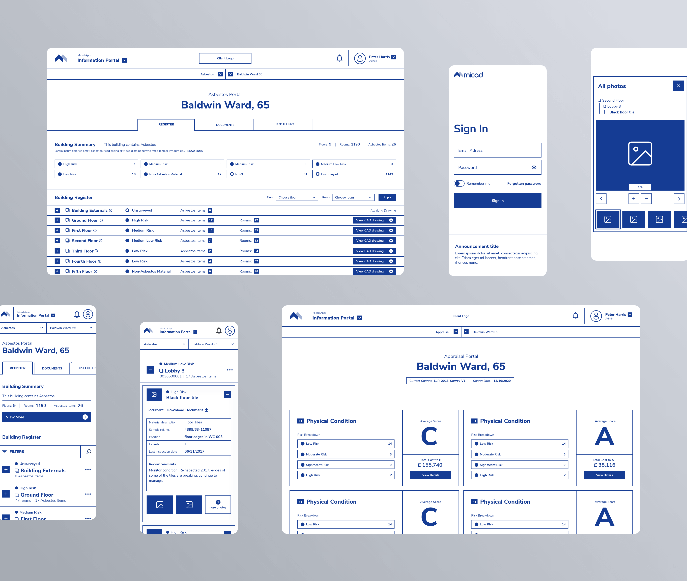
Wireframing is an essential step in design. This is an iterative process that starts with pen and paper and ends with a high-fidelity digital sketch of the proposed solution. It helps me focus on finding the best functional solutions by eliminating distractions. Because functional changes are faster at this stage, it was important to validate the product before the visual design phase.

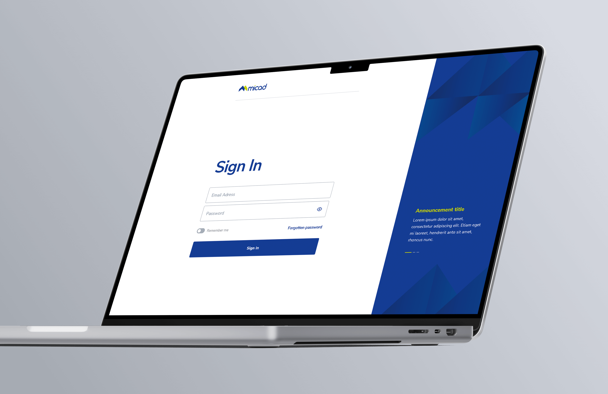
The first step the user must take to use the app is to sign in. The main goal was to make this process as smooth as possible. One of the requirements was to design a slider of announcements in addition to the Sign In form. The main challenge was finding a solution that provided the right balance between the two sections. To overcome it, I focused on creating proper contrast.
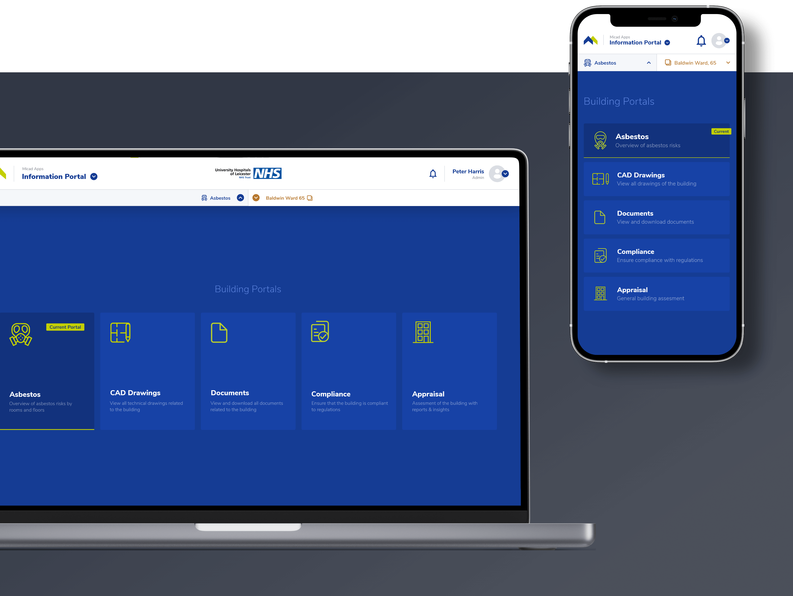
Users access various read-only datasets via portals. Due to the density of the data, we needed the entire viewport to display it, so we decided to replace sidebar navigation with a top-drawer. The component has two functions: building selection and navigation between portals. Its position right below the main top navigation clearly indicates what data set is currently displayed, giving the user confidence.
Asbestos was used as a fireproofing material in many buildings built before the 2000s. Its use became illegal after scientists discovered that exposure to asbestos fibers could cause many health problems. Much of it is still in place though, so building owners are required by law to manage the risk of asbestos.
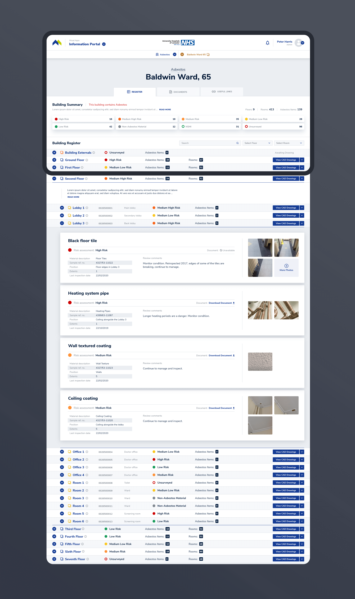
Asbestos Portal provides datasets concerning the management of asbestos. The data is accessed through the Register, which keeps track of all asbestos materials logged by those responsible. Materials are grouped by room, and each room is part of a particular floor. The goal was to come up with a solution that would help the user easily find the material while scanning general info about floors and rooms. We chose the solution of structuring the data into a hierarchical tree with quick-find options.
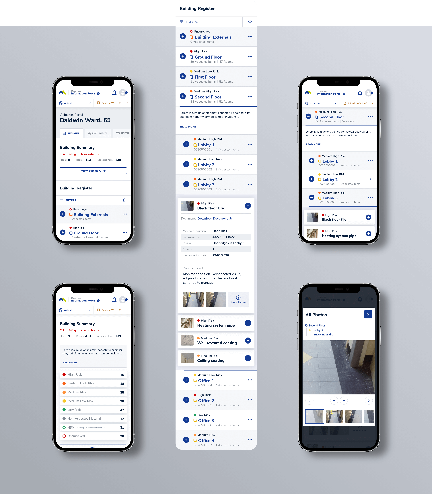
Navigating through a complex system could get complicated on smaller screens. When I designed the hierarchical register, I had to consider the constraints. To reduce scrolling effort, I made the content as narrow as possible.
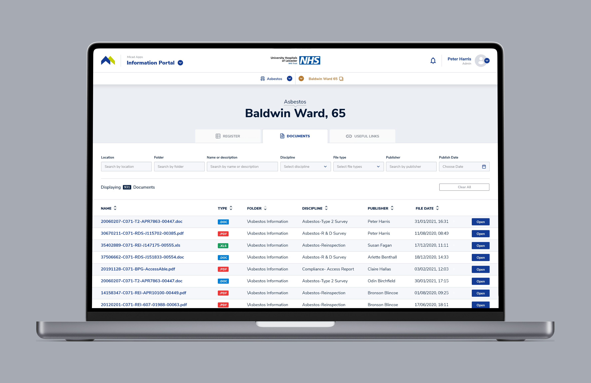
Documents are an essential part of property management. The user's goal is to find them. Easy access to an efficient filtering system makes their task effortless. A clear table with the right density improves scannability.
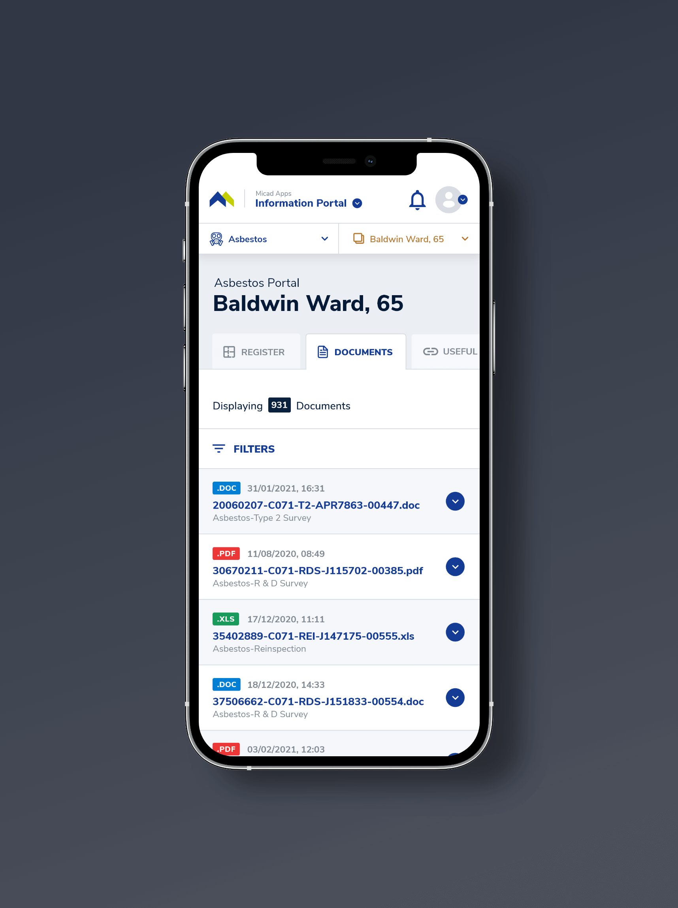
On smaller screens, I found a solution that empowers the user to scan the results as fast as they do on desktop screens. Horizontal scrolling would make scanning documents a tedious task. To avoid that, I translated table rows into cards that provide the most important details of the document. Secondary details are accessed by expanding the card.
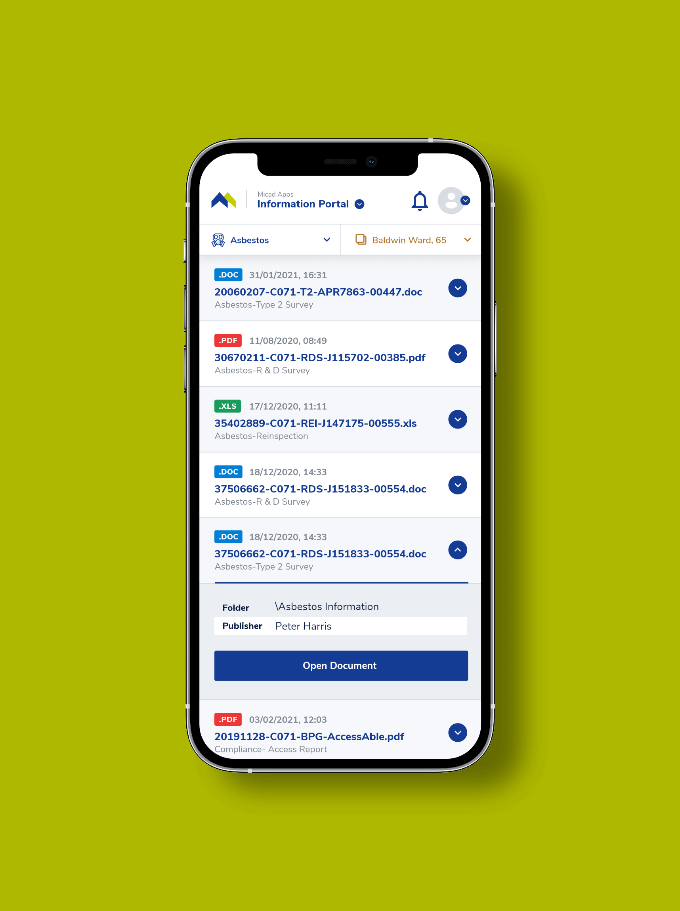
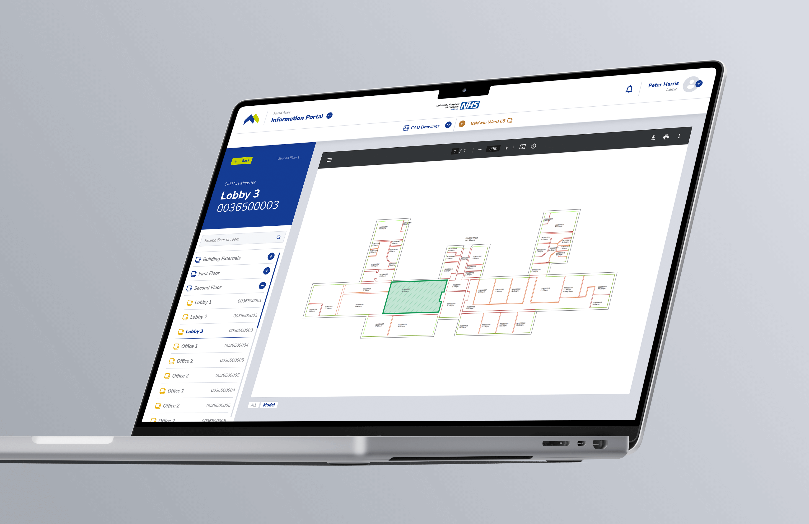
The CAD Drawings portal stores all the technical drawings of the building. Data, such as asbestos materials, could be mapped onto them. It was important to create a sidebar that allows easy navigation between the drawings while clearly indicating which drawing is currently selected.
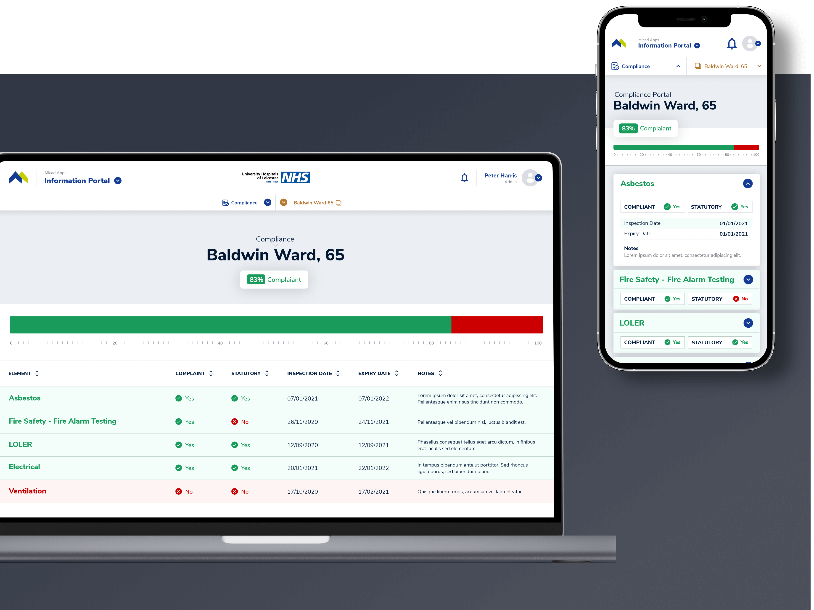
The law requires building owners to comply with regulations. Compliance Portal raises awareness of the status of all compliance elements. It also provides the overall score of the building. The greatest improvement I made on this screen was to clearly differentiate the compliant and non-compliant elements.
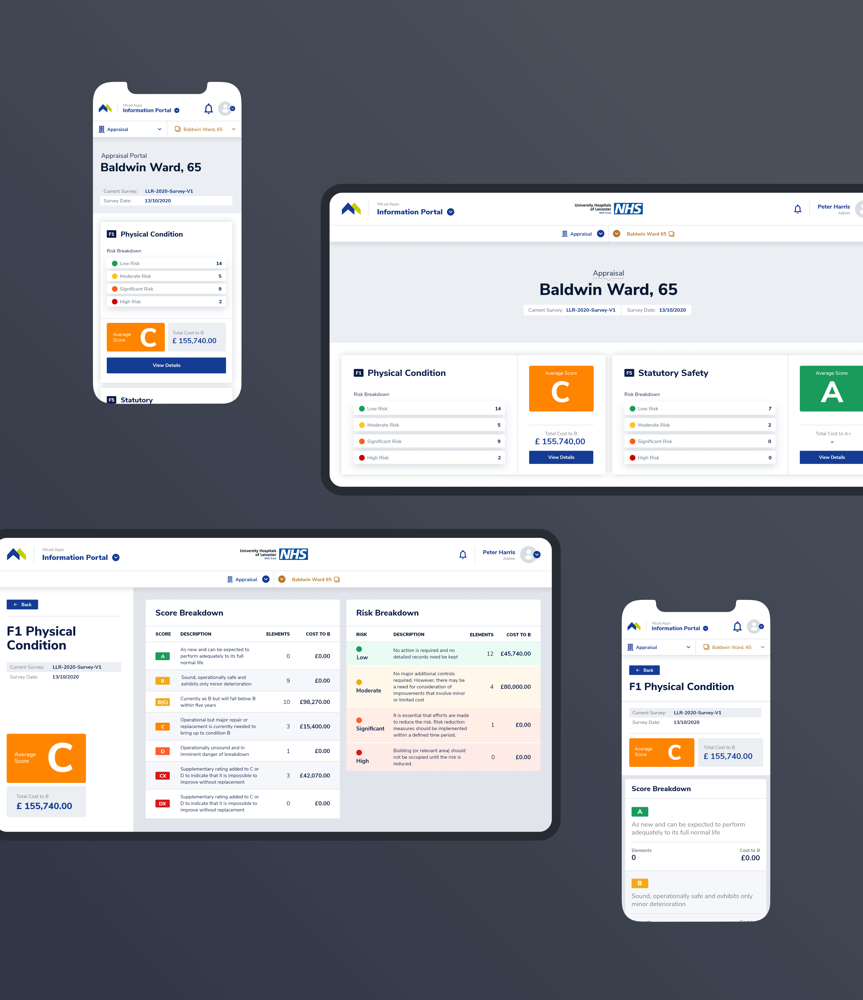
Appraisal Portal provides valuable insights into the current value of the building. It generates suggestions and cost estimates for increasing the value of the building through a score and risk breakdown.
Information Portal is used both in the field and in the office. We made sure the interface adapts to all types of viewports. I used layer grouping and resize constraints to adapt the main screens for all breakpoints while demonstrating the resize behavior of elements.
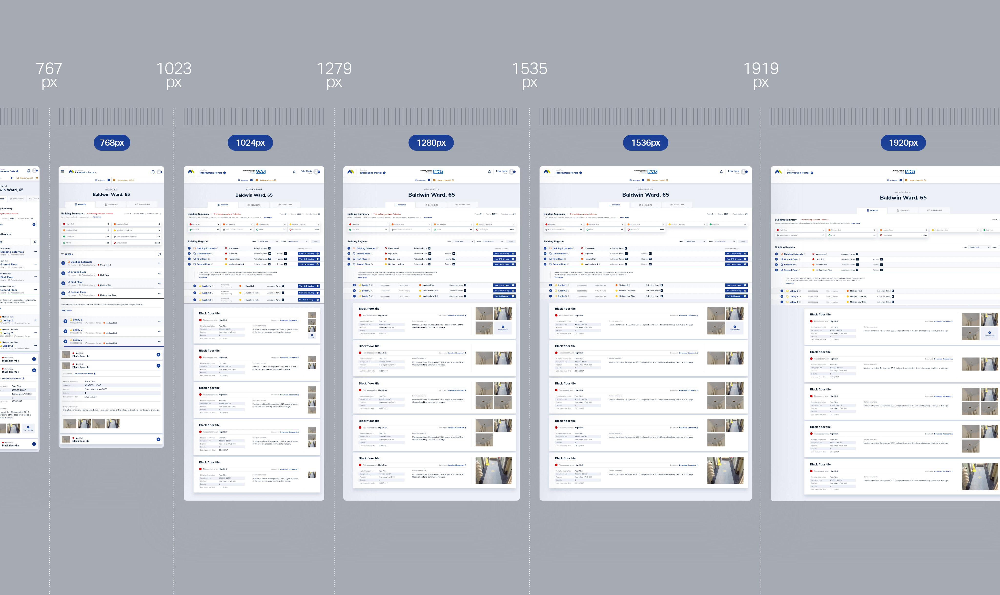
To reduce costs, we created the means to scale the design as easy as possible. Because complexity intrigues me, my favorite task was developing the new Micad Design System.
The system provides a single source of truth for designers, developers and stakeholders. It helped us maintain functional and visual consistency during the design process. We also ensured that design changes were propagated between all applications.

To navigate the complexity of building a design system, I used the Atomic Design methodology. It helped me create all the components in a logical order. In addition, I was careful to build each component with the developer in mind. I took my time to organize all layers and name them accordingly.

Besides researching, planning and designing the components, I also created a presentation of all component variants, complemented by a guide that describes the properties and the states.